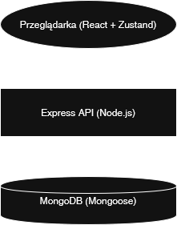
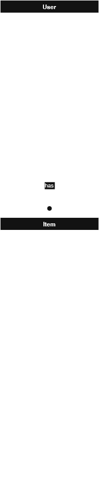
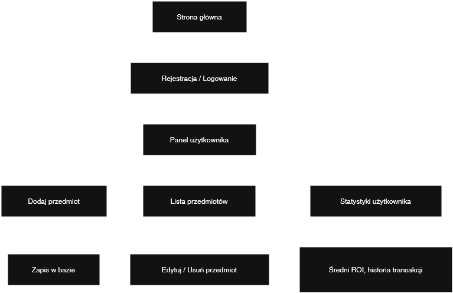

CS2 item tracker - Dokumentacja Techniczna
Opis projektu
CS2 Item Tracker to aplikacja webowa stworzona w celu zarządzania przedmiotami. Umożliwia użytkownikom śledzenie zakupionych i sprzedanych przedmiotów, zarządzanie ich historią oraz analizowanie zysków i strat.
Aplikacja oferuje funkcjonalności takie jak dodawanie przedmiotów, edytowanie ich szczegółów, usuwanie oraz przeglądanie statystyk dotyczących transakcji. Dzięki responsywnemu interfejsowi użytkownika, aplikacja działa płynnie na różnych urządzeniach.
Autorzy projektu
- Dawid Rubacha
- Kajetan Szlenzak
Specyfikacja technologii
- Frontend: React 19.0, TypeScript, TailwindCSS 4.1, Zustand 5.0, Recharts
- Backend: Node.js, Express 5.1, bcrypt, Mongoose
- Baza danych: MongoDB
- Inne: ESLint, Vite, Axios
Instrukcje pierwszego uruchomienia projektu
- Sklonuj repozytorium projektu.
- Pobierz i zainstaluj Node js v22.
- Pobierz i zainstaluj MongoDB community edition wraz z kompasem.
- Uruchom MongoDB Compass i skopiuj connection string (URI), np.:
mongodb://localhost:2137420/
- Stwórz plik .env w katalogu cs2-item-tracker/:
MONGO_URI=mongodb://localhost:2137420/cs2-item-tracker
JWT_SECRET=TwojTajnySekretJWT
- Zainstaluj zależności i zbuduj frontend:
npm run build
- Uruchom backend oraz frontend:
npm run start
- Opcjonalnie: Seedowanie bazy danych (przykładowe dane):
npm run seed
Opis
Login
Email
Hasło
Uzytkownik z przedmiotami:
itemuser
items@example.com
Password456!
Uzytkownik bez przedmiotow:
demouser
demo@example.com
Password123!
Jeśli nie chcesz seedować danych testowych, możesz usunąć katalog backend/seeds
Struktura projektu
cs2-item-tracker/
├── backend/
│ ├── config/
│ ├── controllers/
│ ├── models/
│ ├── routes/
│ ├── seeds/
│ │ └── data/
│ ├── utils/
│ └── server.js
├── frontend/
│ ├── src/
│ │ ├── assets/
│ │ ├── components/
│ │ │ └── ui/
│ │ ├── lib/
│ │ ├── pages/
│ │ ├── store/
│ │ ├── utils/
│ │ ├── App.tsx
│ │ ├── main.tsx
│ │ └── index.css
│ ├── public/
│ │ └── fonts/
│ ├── .gitignore
│ ├── index.html
│ ├── eslint.config.json
│ ├── components.json
│ ├── tsconfig.json
│ ├── tsconfig.json
│ ├── tsconfig.app.json
│ ├── tsconfig.node.json
│ ├── vite.config.ts
│ ├── README.md
│ └── package.json
├── .env
├── .gitignore
├── LICENSE
├── package.json
└── README.md
Diagram ERD

Modele
User
Model użytkownika przechowuje informacje o zarejestrowanych użytkownikach.
- id: ObjectId - unikalny identyfikator użytkownika
- username: string - nazwa użytkownika (unikalna, wymagana)
- email: string - adres email użytkownika (unikalny, wymagany)
- password: string - hasło użytkownika (wymagane)
- status: string - status użytkownika (domyślnie "inactive")
- timestamps: Date - automatyczne znaczniki czasu utworzenia i aktualizacji
Item
Model przedmiotu przechowuje informacje o przedmiotach dodanych przez użytkowników.
- id: ObjectId - unikalny identyfikator przedmiotu
- userId: ObjectId - identyfikator użytkownika, który dodał przedmiot (referencja do User)
- itemName: string - nazwa przedmiotu (wymagana)
- buyPrice: number - cena zakupu przedmiotu (wymagana)
- buyDate: number - data zakupu przedmiotu (wymagana, timestamp)
- soldPrice: number - cena sprzedaży przedmiotu (opcjonalna)
- soldDate: number - data sprzedaży przedmiotu (opcjonalna, timestamp)
- isDeleted: boolean - status usunięcia przedmiotu (domyślnie false)
- deletedAt: number - data usunięcia przedmiotu (opcjonalna, timestamp)
- imageUrl: string - URL obrazu przedmiotu (opcjonalny)
- timestamps: Date - automatyczne znaczniki czasu utworzenia i aktualizacji
Architektura systemu

Kontrolery
Auth Controller
- Signup: POST
/api/auth/signup
- Parametry: username, email, password, confirmPass
- Opis: Umożliwia użytkownikowi rejestrację w systemie.
- Zwracane dane: Informacja o powodzeniu rejestracji
- Signin: POST
/api/auth/signin
- Parametry: login, password
- Opis: Umożliwia użytkownikowi zalogowanie się do systemu.
- Zwracane dane: Token autoryzacyjny oraz dane użytkownika
- Logout: GET
/api/auth/logout
- Parametry: Brak
- Opis: Umożliwia użytkownikowi wylogowanie się z systemu.
- Zwracane dane: Informacja o powodzeniu operacji
- Verify: GET
/api/auth/verify
- Parametry: Brak
- Opis: Weryfikuje status uzytkownika.
- Zwracane dane: Informacja o powodzeniu operacji
Listing Controller
- CreateItem: POST
/api/items/create
- Parametry: itemName, buyPrice, buyDate, soldPrice, soldDate, imageUrl
- Opis: Umożliwia użytkownikowi dodanie nowego przedmiotu.
- Zwracane dane: Informacje o dodanym przedmiocie
- GetItems: GET
/api/items
- Parametry: page, limit
- Opis: Zwraca listę przedmiotów użytkownika z paginacją.
- Zwracane dane: Lista przedmiotów oraz informacje o paginacji
- GetItem: GET
/api/items/{id}
- Parametry: Brak
- Opis: Zwraca przedmiot o wybranym id.
- Zwracane dane: Przedmiot
- GetAllItems: GET
/api/items/all
- Parametry: Brak
- Opis: Zwraca listę wszystkich przedmiotów.
- Zwracane dane: Lista wszystkich przedmiotów
- GetItemStats: GET
/api/items/stats
- Parametry: Brak
- Opis: Zwraca statystyki dotyczące przedmiotów użytkownika.
- Zwracane dane: Statystyki, takie jak średni ROI, średnie ceny zakupu i sprzedaży
- UpdateItem: PUT
/api/items/update/{id}
- Parametry: itemName, buyPrice, buyDate, soldPrice, soldDate, imageUrl
- Opis: Umożliwia użytkownikowi aktualizację szczegółów przedmiotu.
- Zwracane dane: Informacje o zaktualizowanym przedmiocie
- DeleteItem: DELETE
/api/items/delete/{id}
- Parametry: Brak
- Opis: Umożliwia użytkownikowi usunięcie przedmiotu.
- Zwracane dane: Informacja o powodzeniu operacji
UserController
- UpdatePassword: POST
/api/user/update/{id}
- Parametry: curPassword, newPassword, confNewPassword
- Opis: Umożliwia użytkownikowi aktualizację hasła.
- Zwracane dane: Informacja o powodzeniu operacji
System użytkowników
W systemie funkcjonują dwie role użytkowników: gość i zalogowany użytkownik.
- Gość: Może przeglądać strone główna, logowanie oraz rejestrację.
- Zalogowany użytkownik: Może dodawać, aktualizować i usuwać swoje przedmioty oraz aktualizować swoje hasło.
Nadawanie ról użytkownikom
Role użytkownikom są nadawane automatycznie podczas rejestracji. Każdy nowy użytkownik staje się zalogowanym użytkownikiem.
Możliwości użytkowników
- Gość: Przeglądanie strony głównej, mozliwosc logowania i rejestracji.
- Zalogowany użytkownik: Dodawanie, edytowanie, usuwanie przedmiotów oraz aktualizowanie swojego hasła.
Informacje powiązane z użytkownikiem
- Profil użytkownika
- Dodane przedmioty
- Statystyki użytkownika (np. średni ROI, średnie ceny zakupu i sprzedaży)
- Historia przedmiotow
User flow

Najciekawsze funkcjonalności
- Zaawansowana walidacja formularzy: Formularze rejestracji, logowania i aktualizacji hasła posiadają zaawansowaną walidację, która sprawdza poprawność danych wprowadzanych przez użytkowników.
- Responsywny interfejs użytkownika: Aplikacja jest w pełni responsywna, co oznacza, że działa poprawnie na różnych urządzeniach, w tym na komputerach, tabletach i smartfonach.
- Bezpieczne hashowanie haseł: Hasła użytkowników są hashowane przy użyciu bezpiecznych algorytmów, co zapewnia wysoki poziom bezpieczeństwa danych użytkowników.
- Statystyki użytkownika: Użytkownicy mogą przeglądać szczegółowe statystyki dotyczące swoich przedmiotów, takie jak średni ROI, średnie ceny zakupu i sprzedaży.
- Dynamiczne ładowanie danych: Dane są ładowane dynamicznie z serwera, co pozwala na bieżąco aktualizować listę przedmiotów i statystyki bez konieczności odświeżania strony.
- Filtrowanie i sortowanie przedmiotów: Użytkownicy mogą filtrować i sortować swoje przedmioty według różnych kryteriów, takich jak data zakupu czy cena.